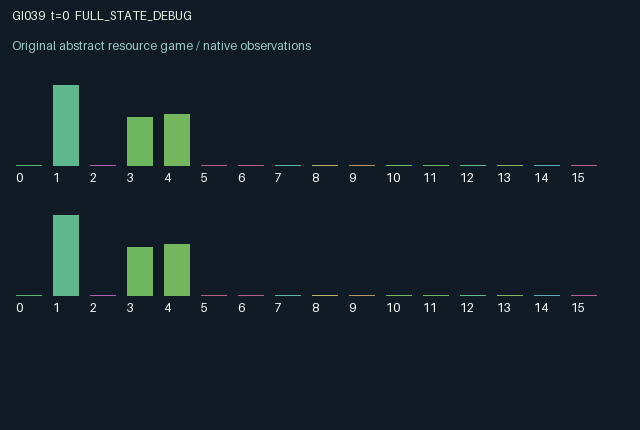

GI039 / LEGACY_ARRAY
astra-d2-00039: Revocable consensus with aging private evidence
2 agents5 actions16 observation columns32 original horizonRuntime: PASS
Release verification episode
Untrained uniform legal actions. Actual JAX state sampled along the full original episode; full-state debug camera. No human performance or learning claim.

Run this game
crucibles play --game 39
Start Python locally, then open the address printed by the terminal. Installation, multiplayer, takeover and keyboard controls →
Objective, rewards & ending
Exact task contract
{
"objective": "Accumulate original per-agent rewards under the interaction rules in mechanism.md.",
"natural_termination": "No early terminal; original t >= 32 horizon.",
"exact_transition_and_reward_source": "def raw_step(self, key, state, actions):\n mode_key, drift_key, clue_key = jax.random.split(key, 3)\n proposing = (actions == 1) | (actions == 2)\n resolve = jnp.all(state[\"approved\"]) & jnp.all(state[\"vote\"] >= 0) & (state[\"vote\"][0] == state[\"vote\"][1]) & jnp.all(state[\"vote_age\"] >= 1) & ~jnp.any(proposing)\n correct = state[\"vote\"][0] == state[\"mode\"]\n sampled_mode = jax.random.randint(mode_key, (), 0, 2, dtype=jnp.int32)\n drift = jax.random.bernoulli(drift_key, 0.06, ())\n next_mode = jnp.where(resolve, sampled_mode, jnp.where(drift, 1 - state[\"mode\"], state[\"mode\"])).astype(jnp.int32)\n inspect = (actions == 3) & (state[\"charge\"] >= 0.35)\n authorize = (actions == 4) & (state[\"vote\"] >= 0) & (state[\"charge\"] >= 0.1) & ~state[\"approved\"] & ~resolve\n refresh = inspect | resolve\n correct_clue = jax.random.bernoulli(clue_key, 0.6, (2,))\n fresh_clue = jnp.where(inspect, next_mode, jnp.where(correct_clue, next_mode, 1 - next_mode)).astype(jnp.int32)\n next_clue = jnp.where(refresh, fresh_clue, state[\"clue\"]).astype(jnp.int32)\n next_clue_age = jnp.where(refresh, 0, jnp.minimum(state[\"clue_age\"] + 1, 8)).astype(jnp.int32)\n next_precision = jnp.where(inspect, 1.0, jnp.where(resolve, 0.6, state[\"precision\"])).astype(jnp.float32)\n next_vote = jnp.where(resolve, -1, jnp.where(proposing, actions - 1, state[\"vote\"])).astype(jnp.int32)\n next_vote_age = jnp.where(resolve | proposing, 0, jnp.where(state[\"vote\"] >= 0, jnp.minimum(state[\"vote_age\"] + 1, 8), 0)).astype(jnp.int32)\n next_approved = jnp.where(resolve | proposing, jnp.zeros((2,), dtype=jnp.bool_), state[\"approved\"] | authorize)\n next_charge = jnp.clip(state[\"charge\"] + 0.16 * (actions == 0).astype(jnp.float32) - 0.35 * inspect.astype(jnp.float32) - 0.1 * authorize.astype(jnp.float32), 0.0, 1.0)\n next_state = {\n \"t\": state[\"t\"] + jnp.array(1, dtype=jnp.int32),\n \"mode\": next_mode,\n \"clue\": next_clue,\n \"clue_age\": next_clue_age,\n \"precision\": next_precision,\n \"charge\": next_charge,\n \"vote\": next_vote,\n \"vote_age\": next_vote_age,\n \"approved\": next_approved,\n \"last_decision\": jnp.where(resolve, state[\"vote\"][0], state[\"last_decision\"]).astype(jnp.int32),\n \"last_result\": jnp.where(resolve, jnp.where(correct, 1.0, -1.0), state[\"last_result\"]).astype(jnp.float32),\n \"resolutions\": state[\"resolutions\"] + resolve.astype(jnp.float32),\n \"last_action\": actions.astype(jnp.int32),\n }\n decision_payoff = jnp.where(resolve, jnp.where(correct, 0.8, -0.7), 0.0)\n rewards = jnp.clip(jnp.full((2,), decision_payoff, dtype=jnp.float32) - 0.035 * inspect.astype(jnp.float32) - 0.01 * authorize.astype(jnp.float32), -1.0, 1.0).astype(jnp.float32)\n done_all = next_state[\"t\"] >= 32\n dones = jnp.full((2,), done_all, dtype=jnp.bool_)\n info = {\"done_all\": done_all, \"legal_mask\": self.legal_actions(next_state)}\n return self.observe(next_state), next_state, rewards, dones, info"
}Declared per-step reward bounds: -1.0 to 1.0. Observability: source_defined.
Rules
Original mechanism document (historical status wording retained)
# astra-d2-00039: Revocable consensus with aging private evidence This parentless proposal is related to generic decentralized inference, costly sensing and delayed consensus. It does not claim program nonisomorphism or established novelty. No benchmark, other candidate or evaluation result was consulted. A shared binary latent mode is not directly observable. Each agent initially gets its own clue that matches the mode with probability 0.6. Actions are 0 recharge, 1 propose label 0, 2 propose label 1, 3 inspect, and 4 authorize one's current proposal. A proposal is a persistent public record. Proposing, including repeating the same label, resets its age and revokes that agent's authorization. Authorization costs 0.1 charge and remains in force until a new proposal or a joint resolution. A joint resolution uses old-state records: both proposals must exist and match, both authorizations must already exist and both proposal ages must be at least one. Any current proposal action vetoes resolution for that step. Otherwise resolution occurs automatically when these conditions hold, whether the current actions are wait, inspection or attempted authorization. The old agreed label is scored against the old latent mode. Both proposals and authorizations then clear, a new latent mode is sampled, and each agent obtains a new noisy clue. The latest public resolved label and correctness result persist. Outside resolution the latent mode independently flips with probability 0.06 per step. A feasible inspection spends 0.35 charge and returns an exact clue about the next latent mode in that transition, including a replacement mode if resolution occurs. This information arrives too late to change an already resolving old decision. A wait action replenishes 0.16 charge, capped at one. An agent's stored clue persists without inspection or resolution, so its acquisition precision is not its current correctness probability after drift. Observation columns 0..15 are time/32; own clue; own clue age/8; precision at acquisition; own charge; own encoded proposal; own proposal age/8; own authorization; counterpart encoded proposal; counterpart proposal age/8; counterpart authorization; last encoded resolved label; last correctness result; resolution count/8; own and counterpart previous actions/4. Labels are encoded as (label+1)/2, with unset label -1. Age counters saturate at eight. The latent mode, counterpart clue, counterpart acquisition precision and counterpart charge are hidden. Each resolution pays both agents +0.8 if correct and -0.7 otherwise. Inspection costs 0.035 reward, and a first feasible authorization costs 0.01. Explicit clipping enforces [-1,1]; exclusive actions give an unclipped lower bound of -0.735 and upper bound of 0.8. Both agents influence the other's payoff by their public records and consent, and a resolution jointly resets the information opportunity. Sensing, waiting, fast agreement and revising stale evidence have different delayed consequences. All five actions are legal, with insufficient charge producing an ineffective inspection or authorization. Random draws use only supplied keys and explicit splits. The 32-step clock returns both terminal dones and preserves the final state. Resolution count normalization is a scale only, not a claimed upper bound. Status: authored source only. No execution, validation receipt, compiler success, pool eligibility, nonisomorphism proof or learning effectiveness is asserted.
Commands
0Recharge
1Propose 0
2Propose 1
3Inspect private clue
4Authorize vote
Roles & abilities
agent_0 Original legacy agent; see mechanism and source
agent_1 Original legacy agent; see mechanism and source
Observation permissions
Training receives only the original observation rows. Role cameras use declared visibility; debug cameras are explicitly marked. Local benchmark records log debug exposure and role takeover history.
Exact observation layout
[
{
"slice": [
0,
16
],
"visibility": "exact original observe() below",
"source_code": "def observe(self, state):\n other = jnp.array([1, 0], dtype=jnp.int32)\n obs = jnp.zeros((2, 16), dtype=jnp.float32)\n obs = obs.at[:, 0].set(state[\"t\"].astype(jnp.float32) / 32.0)\n obs = obs.at[:, 1].set(state[\"clue\"].astype(jnp.float32))\n obs = obs.at[:, 2].set(state[\"clue_age\"].astype(jnp.float32) / 8.0)\n obs = obs.at[:, 3].set(state[\"precision\"])\n obs = obs.at[:, 4].set(state[\"charge\"])\n obs = obs.at[:, 5].set((state[\"vote\"].astype(jnp.float32) + 1.0) / 2.0)\n obs = obs.at[:, 6].set(state[\"vote_age\"].astype(jnp.float32) / 8.0)\n obs = obs.at[:, 7].set(state[\"approved\"].astype(jnp.float32))\n obs = obs.at[:, 8].set((state[\"vote\"][other].astype(jnp.float32) + 1.0) / 2.0)\n obs = obs.at[:, 9].set(state[\"vote_age\"][other].astype(jnp.float32) / 8.0)\n obs = obs.at[:, 10].set(state[\"approved\"][other].astype(jnp.float32))\n obs = obs.at[:, 11].set((state[\"last_decision\"].astype(jnp.float32) + 1.0) / 2.0)\n obs = obs.at[:, 12].set(state[\"last_result\"])\n obs = obs.at[:, 13].set(state[\"resolutions\"] / 8.0)\n obs = obs.at[:, 14].set(state[\"last_action\"].astype(jnp.float32) / 4.0)\n obs = obs.at[:, 15].set(state[\"last_action\"][other].astype(jnp.float32) / 4.0)\n return obs"
}
]Entity visibility & attributes
[]
Actual verification & provenance
Per-game execution receipt
{
"game": "gi039",
"status": "PASS",
"verification_revision": 2,
"source_sha256": "d8d08eb36f7043fc15c11840e908549a2d0733860b24731d9c760a715299c32b",
"seed": 20261101,
"runtime": {
"jax": "0.4.38",
"numpy": "1.26.4",
"devices": [
"TFRT_CPU_0"
]
},
"dimensions": {
"num_agents": 2,
"observation_size": 16,
"num_actions": 5,
"max_steps": 32
},
"checks": {
"eager_reset": {
"status": "PASS",
"seconds": 0.9629406929016113
},
"observation_spaces_legal_masks": {
"status": "PASS",
"seconds": 0.1379392147064209
},
"eager_step": {
"status": "PASS",
"seconds": 0.8537378311157227
},
"jit_reset": {
"status": "PASS",
"seconds": 0.33870697021484375
},
"jit_step": {
"status": "PASS",
"seconds": 0.6879065036773682
},
"eager_jit_integer_parity_float_measurement": {
"status": "PASS",
"seconds": 0.001558542251586914
},
"jit_vmap_reset": {
"status": "PASS",
"seconds": 0.46793603897094727
},
"jit_vmap_step": {
"status": "PASS",
"seconds": 0.7620713710784912
},
"outer_autoreset_api": {
"status": "PASS",
"seconds": 1.1405630111694336
},
"full_original_horizon_episode_and_render": {
"status": "PASS",
"seconds": 1.747793436050415
}
},
"human_scores": null,
"browser_controls": "PENDING",
"failures": [],
"elapsed_seconds": 7.456550598144531,
"float_parity_max_abs": 0.0,
"numerical_parity": "EXACT",
"raw_terminal_absorbing": "NOT_PART_OF_ORIGINAL_LEGACY_CONTRACT",
"terminal_outer_reset": "PASS",
"episode_steps": 32,
"scripted_random_returns": [
-0.1600000001490116,
-0.125
],
"terminal": true,
"demo_information": "FULL_STATE_DEBUG",
"demo_frames": 33,
"render_roles_checked": 2
}Chromium control verification
{
"game": "gi039",
"status": "PASS",
"human_scores": null,
"engineering": true,
"checks": [
"catalog_selected_and_real_native_reset",
"dom_queue_and_native_step",
"second_participant_ownership_and_native_joint_step",
"all_roles_individually_controllable_no_role_cap",
"explicit_debug_camera",
"release_to_pure_ai_without_reset",
"close_session_preserves_log"
],
"ui_sha256": "96243f9de144b80b5e20a114330e2206bdcd58d3efc9c6f13bbc08b95cacc14d",
"keyboard": "NO_LEGAL_CARDINAL_COMMAND_FOR_ROLE0_AT_RESET",
"seconds": 4.07480001449585
}Original identity and file hashes
{
"id": 39,
"key": "gi039",
"title": "astra-d2-00039: Revocable consensus with aging private evidence",
"summary": "",
"tags": [],
"family": "legacy_array",
"dimensions": {
"num_agents": 2,
"observation_size": 16,
"num_actions": 5,
"max_steps": 32
},
"source_sha256": "d8d08eb36f7043fc15c11840e908549a2d0733860b24731d9c760a715299c32b",
"manifest_sha256": "041e19fc13a1b0d29b734b3c492fffd451fa0d7df5e4f12dcc10054d58aa6e96",
"files": [
{
"file": "candidate.py",
"sha256": "d8d08eb36f7043fc15c11840e908549a2d0733860b24731d9c760a715299c32b",
"bytes": 5776,
"origin": "work/exp_2/astra_generation/discovery_v2/initial/candidate_00039/attempt_00/candidate.py"
},
{
"file": "mechanism.md",
"sha256": "71ec5110d3645d2b6df9c5258bcb608f6682d2da480b8a4e0d6226902431003c",
"bytes": 3488,
"origin": "work/exp_2/astra_generation/discovery_v2/initial/candidate_00039/attempt_00/mechanism.md"
}
],
"original_status": "LEGACY_SOURCE",
"original_saved_replay": false,
"release_validation": "PASS",
"human_scores": null,
"browser_validation": "PASS"
}